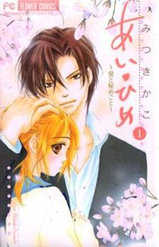

Alternative Names: Ai Hime - Love and Secret; Love Princess - Love and SecretAuthor(s):Mistuki Kako
Genres: Drama, Romance, Shoujo
Release: 2006
Status: Complete
Type: Manga
Length: 3 Volumes 13 Chapters
Read Online @:

More Info @:

Notes
Mao follows cat to a secret cherry blossom tree, and below lies a sleeping man. Love at first sight, for both of them. Next day they find out that they are niece and uncle!! and that they will be staying together for 2 years while Mao's parents go traveling. Love and Secret~~